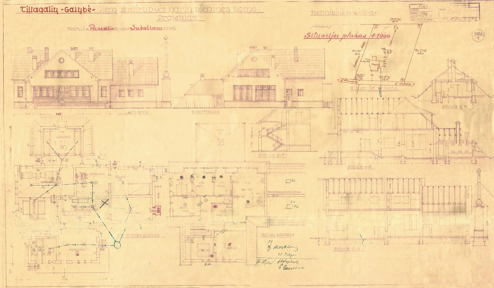

Fotogalerija
Autentiški kadrai ir brėžiniai
Atrinkti istoriniai brėžiniai bei atkurtos pieninės architektūrinės detalės iš mūsų archyvo.

Archyvas1937 m. B. Elzbergo projektas
Išlikę originalūs „Galybės“ pieninės brėžiniai ir fasado pjūviai.
Išorė
Raudonų plytų mūras
Belgiško stiliaus įkvėptas fasadas su arkinėmis langų rozetėmis.
 Vidus
Vidus
Gamybinės ir edukacijų erdvės
Erdvūs pastato skliautai, pritaikomi muziejui ir demonstracinei gamybai.
 Detalės
Detalės
Mūro meistriškumas
Kruopščiai išsaugotos tarpukario mūrininkų darbo detalės ir sąramos.